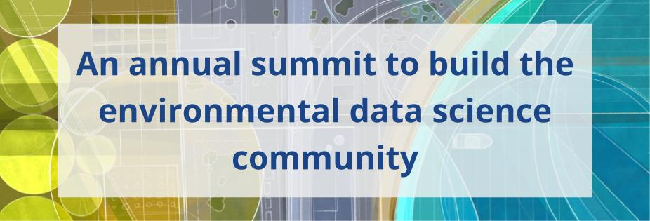

February 4-6, 2025 | Santa Barbara, CA
Hosted by the National Center for Ecological Analysis and Synthesis
Environmental Data Science (EDS) is a growing field of interdisciplinary approaches to investigating and answering environmental questions with modern data science tools. The field is broad, diverse, and expanding. This Summit aims to bring together all types of environmental data scientists to lay the foundation for a more cohesive and collaborative transdisciplinary community.
The goals of the Summit are to build community and foster collaboration within the Environmental Data Science community. This year’s theme is The Future of AI in Conservation & Management. What are the opportunities and risks of using AI to inform (or transform) our approach to conservation and management, in particular with respect to new and different tools, the ethics connected with using AI, and future applications and innovations?
Participation
The application window has closed.
Participation is limited to 100 attendees, with an application required. We are able to provide funding for up to 60 participants. Funding will cover travel to Santa Barbara, lodging, and the Summit registration fee. In order to attend you must first apply. Applications will be used both to select participation and award funding.
Participant attendance is not limited by sector, discipline, background, or career stage. If you use data to ask questions about our environment and how we interact with it, this Summit is for you!
Agenda
Day 1 - February 4
| 8:15 | Registration Check in at the lobby of the Cabrillo Pavillion |
| 8:30 | Breakfast, Get to Know & Welcome |
| 9:15 | Keynote Speaker - Tanushree BISWAS, Carbon Program Director, The Nature Conservancy |
| 10:00 | Coffee break |
| 10:30 | Instructions for the day |
| 10:45 | Ideation Session Facilitated brainstorming to lay the groundwork for small group working sessions |
| 11:30 | Poster & Flash Talk Prep In your group, create a minimalist poster that communicates your idea and prep a 1 minute flash talk. Each group has 1 minute to present their idea to the group. During lunch, everyone explore the posters and think about what they want to work on. |
| 12:30 | Lunch |
| 1:30 | Instructions and Next Steps |
| 1:35 | Flash Talks |
| 2:45 | Coffee Break |
| 3:00 | Breakout group work |
| 4:50 | Day 1 Wrap Up |
| 5:00 | Sunset cocktail hour |
| 6:00 | Dinner |
| 7:00 | Get Funky with the Steering Committee Join steering committee members in the Santa Barbara “Funk Zone” to continue conversations, network and have a little fun |
Day 2 - February 5
| 8:30 | Breakfast |
| 9:00 | Welcome to Day 2 |
| 9:05 | Keynote Speaker - Kakani Katija, Principal Engineer, Monterey Bay Aquarium Research Institute |
| 9:50 | Coffee Break |
| 10:15 | Midway Group Presentations Present initial ideas, re-evaluate, consider adding ideas |
| 12:15 | Lunch |
| 1:15 | Breakout group work |
| 3:15 | Coffee Break |
| 4:30 | Day 2 Wrap Up |
| 4:45 | Optional Evening Activity A list of activities will be provided |
| 6:00 | Dinner |
Day 3 - February 6
| 8:30 | Breakfast |
| 9:00 | Welcome to Day 3 |
| 9:05 | Final Group Presentations |
| 10:15 | Coffee Break |
| 10:30 | Final Group Presentations |
| 11:30 | Next Steps Discussion |
| 12:00 | Closing |
| 12:15 | Depart |
Location & Lodging

The Summit will take place at the Cabrillo Arts Pavilion, situated adjacent to the beach.
The Mar Monte Hyatt Hotel is directly across the street from the Pavilion and will be the most convenient hotel for attendees. There are additional hotels within walking distance from the Pavilion.
Event Parking
If you are not staying at the Mar Monte Hotel, there is ample parking in city parking lots next to the Cabrillo Pavilion. Parking at these waterfront lots costs $3.00/hour or $18 for the day. There is free parking within a short walking distance along Cabrillo boulevard, near the East Beach volleyball courts and near Dwight Murphy Field.
Steering Committee
Ben Halpern | Elizabeth Wolkovich | Noam Ross | Amanda Whitmire | Susan Shingledecker | Dawn Wright | Dorris Scott | Leah Wasser
A Research Coordination Network, hosted by the National Center for Ecological Analysis and Synthesis and funded by the National Science Foundation.
Sign up to receive information about the Summit